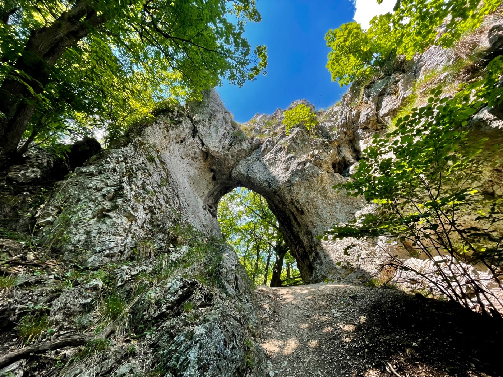
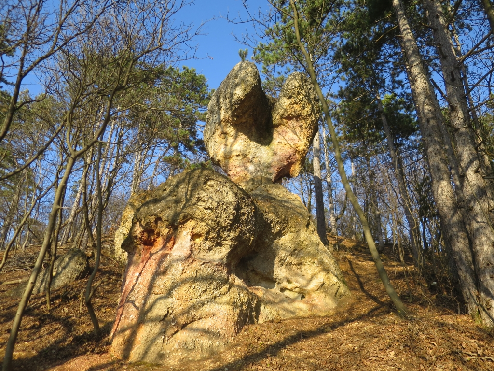

A Pilis hegység egy izgalmas és természetes környezetű hely, ahol sokféle túra lehetőség van. Az oldalon megtalálod az elérhető túra utvonalakat és a hozzájuk tartozó információkat.
Dera szurdok

A Dera-szurdok a Pilis hegység egyik legszebb és legnépszerűbb kirándulóhelye, amely Pilisszentkereszt közelében található. A szurdokot a Dera-patak vájta ki évezredek alatt, létrehozva egy vadregényes, sziklás völgyet, amely különleges hangulatával minden évszakban lenyűgözi a látogatókat. A szurdokvölgyben haladó túraútvonal viszonylag könnyűnek számít, ezért családok és kezdő túrázók számára is ideális választás. A túra során fahidakon, lépcsőkön és kisebb patakátkeléseken vezet az út, miközben meredek sziklafalak és sűrű erdők veszik körül a kirándulókat. Tavasszal és ősszel különösen látványos a terület, amikor a természet színei igazán érvényesülnek, de nyáron is kellemes hűvöset biztosít a lombkorona. A szurdok mentén több pihenőhely és kilátópont is található, ahol meg lehet állni feltöltődni és gyönyörködni a környezetben. A Dera-szurdok nemcsak természeti szépsége miatt népszerű, hanem azért is, mert könnyen megközelíthető, jól jelzett túraútvonalakkal rendelkezik, így ideális célpont egy rövid, mégis élményekben gazdag kiránduláshoz.
Vaskapu völgy
A Vaskapu-völgy a Pilis hegység egyik festői szurdokvölgye, amely elsősorban túrázók és természetkedvelők számára jelent kiváló célpontot. A völgyet sűrű erdők, sziklás oldalú meredélyek és kristálytiszta patakok jellemzik, amelyek különleges, nyugodt hangulatot teremtenek. Az ösvények jól karbantartottak, így akár kezdő túrázók vagy családok is könnyedén bejárhatják a területet. A völgy neve onnan ered, hogy a szoros, sziklafalakkal szegélyezett részeknél a túrázók egy vaskapuként szűk résen haladnak át, ami izgalmas élményt nyújt. A túra során több kilátópont és pihenőhely található, ahol megcsodálhatjuk a környező erdők látványát, hallgathatjuk a madarak énekét, és gyönyörködhetünk a természet csendjében. Tavasszal a friss zöld levelek, ősszel pedig a színes lombok különleges hangulatot adnak a völgynek, így minden évszakban érdemes felkeresni.
Ördögoltár szikla (másnéven Csabai torony )
Az Ördögoltár-szikla a Pilis egyik legismertebb természeti és történelmi látnivalója. Nevét a helyi legendák szerint arról kapta, hogy a szikla tetején egykor az „ördög oltárát” tisztelték. A meredek, sziklás kiemelkedés kiváló panorámát biztosít a környező hegységre és völgyekre, így a kirándulók egyik kedvelt célpontja. A sziklához vezető túraútvonal közepes nehézségű, néhány meredekebb részt is tartalmaz, így túrázói tapasztalatot igényel. A szikla tetején pihenve a látogatók gyönyörű kilátásban részesülnek, ahol a Pilis egész hegysége átlátható, és tiszta időben akár távolabbi csúcsok is láthatóak. A terület különleges flórája és sziklás környezete igazi élményt nyújt a természet szerelmeseinek.